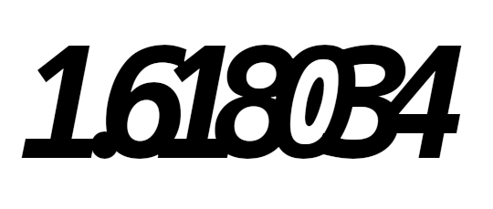
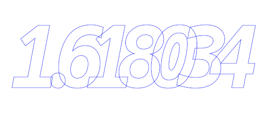
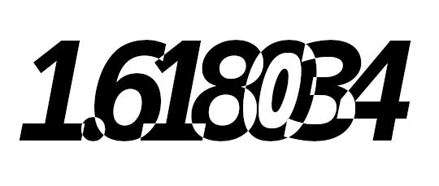

If you create text where there is an overlap between characters:

The strokes of these characters of course overlap:

And if you try to get a selection from that path you don’t get the initial text:

This is because Gimp uses an “even-odd” algorithm to determine if a pixel is selected or not:
drawing a line from the pixel in any random direction, the pixel is outside the selection
if the line intersects an even number of strokes (0 is considered even),
and inside the selection if the line intersects an odd number of strokes.
If the overlap areas, such a line intersects two strokes, one for each character, so
the overlap area is unselected.
This plugin uses a different algorithm: it identifies the strokes that belong to the same characters (more accurately, sets of nested strokes), and adds theses characters separately to the selection, so the overlap areas are the union of the selections for each characters and are selected:
The plugin appears in the right-click menu of the Path list: Text path to selection.
There are no parameters. For very complex paths (several hundred of strokes), make sure that the plugin has finished before you use the selection.
Many thanks to Akovia for the incentive and the text/test cases from an unfathomable font collection.